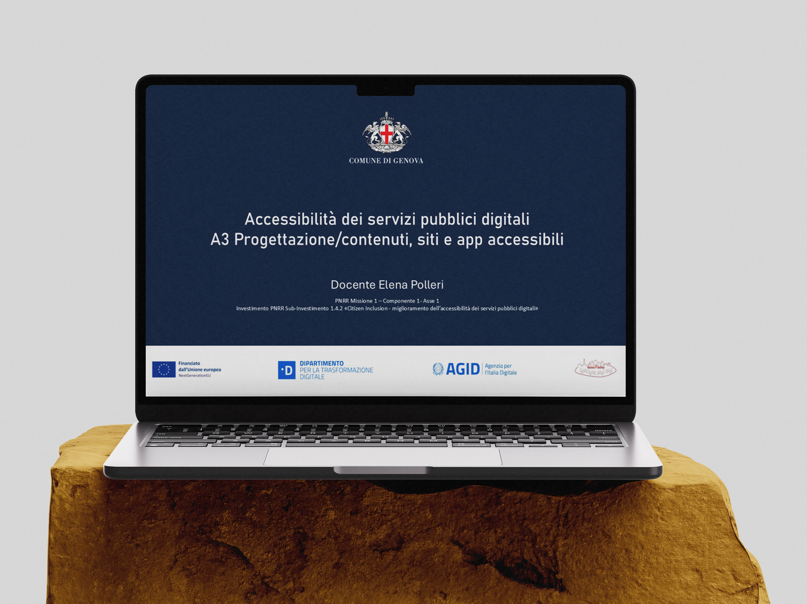

Designing for education
Designing, delivering, and evaluating a national e-learning training program for Public Administration professionals under the PNRR framework.
The Context & The Challenge
Within the National Recovery and Resilience Plan (PNRR) — specifically Measure 1.4.2 Citizen Inclusion — digital accessibility is a strategic lever to reduce the digital divide and modernize public services across Italy.
The core challenge was to design and deploy an effective 12-hour training program addressed to 375 professionals from Ligurian Public Administrations, translating complex regulatory frameworks into concrete operational skills.

Instructional Design & Delivery
I managed the end-to-end curriculum design and online delivery across 15 editions held between May and December 2024. The syllabus was structured into core didactic modules covering:
- Regulatory framework (Legge Stanca, European Accessibility Act, AgID guidelines)
- WCAG (Web Content Accessibility Guidelines)
- Accessibility statement
- Accessible PDF documents
- User experience and usability
- Front-end development and accessible web writing
- Accessibility evaluation tools
To maximize engagement, I developed customized learning materials, including detailed slide decks, project works, and practical guidelines designed to support everyday administrative workflows.
Impact Evaluation & Data Analysis
To measure the training's efficacy, I handled the collection and quantitative/qualitative analysis of feedback data through anonymous closed-question surveys. Out of 375 participants, 145 completed the final questionnaire (~39% response rate, statistically significant).
The data revealed a strong correlation between initial skill levels and perceived improvement, confirming how participants with limited background knowledge gained the greatest operative benefit.